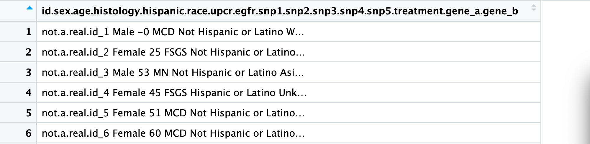
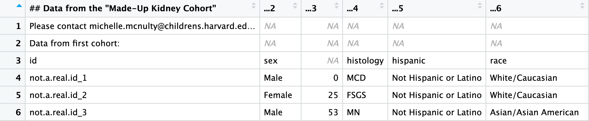
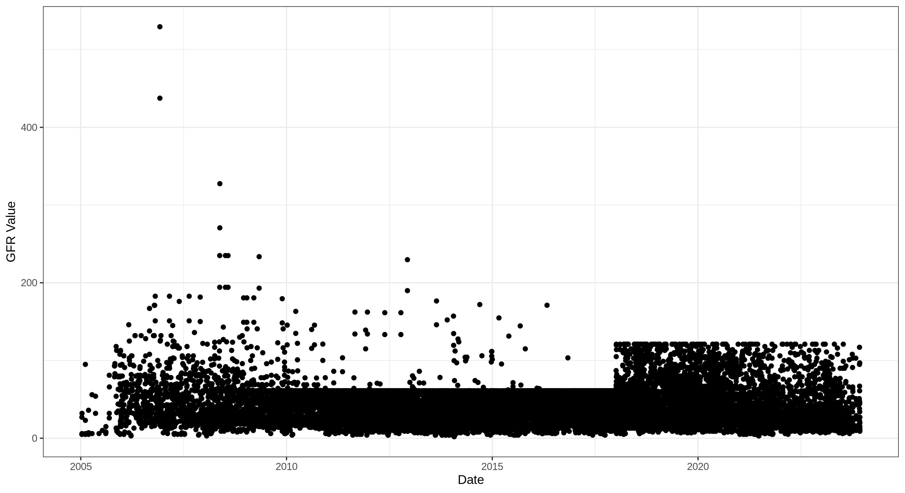

Introduction
Learning goals
- Get exposure to R through data-driven learning
- Understand how to load and clean clinical data
- Fit and interpret simple regression models in R
- Use base R and tidyverse syntax to work with data
Why R?
- Open source (publicly available to view, modify and distribute for free)
- Easy to share code & works on different platforms
- Large supportive community
- Many packages and functions to solve many different problems
- Rstudio - interactive interface for data analysis with R
What this tutorial is not:
- An in depth tutorial on coding in R
- A guide to statistical methods
But here are some great resources if you’re interested in learning more:
- swirl: Interactive R tutorials in Rstudio
- Data Science: R Basics offered by Harvard (credit: Rafael Irizarry)
- Basic data wrangling in R with dplyr: Wrangling penguins (credit: Allison Horst)
- Master your data visualization with tutorials and guides at ggplot2tor.com (credit: Christian Burkhart)
- Prefer a physical book? Check out these
- Visual learner? Learn by watching on R screencasts
- Got the code down, but need a stats refresher? Check out StatQuest on YouTube for great explanations of various statistical methods (credits: John Starmer)
Data Analysis Outline
Clarify the goal
Before diving into the data, make sure you understand the research question or hypothesis and what is expected from the analysis.Load and check your data
Confirm that the data was imported into R correctly. Check file paths, variable names, and dimensions to make sure nothing got lost in transfer.Explore and assess the data
Use summaries and visualizations to get to know your dataset:
üîç What types of variables are included? (numeric, categorical, dates, etc.)
üîç Are there any missing values?
üîç What do the distributions look like? Are there outliers or unusual values?
Perform the analysis
Once you’re confident in the quality and structure of your data, begin your planned analysis (e.g., modeling, hypothesis testing).Interpret the results
What do the results mean in the context of your question? Are they statistically and scientifically sound? Think critically before drawing conclusions.Communicate your findings
Present your results clearly using figures, tables, and written summaries. Consider your audience. What do they need to understand the story your data tells?
Clarify the goal
- A collaborator has identified genetic variants and a treatment associated with kidney function. They ask you to test these associations in your cohort. You’re given a large dataset with the variants of interest, demographics information, therapeutic indicator, and kidney function for each individual in your cohort. They would like a summary of the cohort, i.e. “Table 1”, p-values for tested associations, and a few figures for the paper that summarize key findings.
Load and check your data
Throughout this workshop, we will work with the
tidyverse package, a suite of very useful data analysis
functions. For more info visit here. We will also work
with base R, but we do not have to load this library, it’s
built in.
#install.packages("tidyverse")
library(tidyverse)library and package are often used refered
to interchangeably, but there is a difference. You install a
package and then load it into your R session from its
library location to make its contents available for
use.
Working with Directories in R
To read or write files in R, you need to know the working directory of your R session, i.e., where your R session is looking for files. R will look for files relative to this folder unless you provide an absolute path.
Use thegetwd() function to check your current working
directory:
getwd()This tells you where R is currently looking for files.
If you want R to look somewhere else (e.g., a different folder), you
have to change your working directory with
setwd("path/to/your/folder").
üí° Tip: If your files are stored on a network drive or external
volume, your path may start with something like
/Volumes/YourDriveName.
Read in data
Here is what it looks like in Excel:

There are many functions to load various types of data,
read_tsv() from the readr library (from
tidyverse) is one option for tab-separated files. Similarly,
read_csv() will read in comma-separated files.
df <- read_tsv('data/fake_data.tsv')This message is from the readr package confirming that
your tab-delimited file was read successfully and providing a summary of
the column types.
This output also tells you how the function interpreted the types of data:
- These are characters/strings:
chr (5): id, sex, histology, hispanic, race - These are numeric, or “double”:
dbl (11): age, upcr, egfr, snp1, snp2, snp3, snp4, snp5, treatment, gene_a, gene_b
üí°
dfis a commonly used name for data frames because it’s short and easy to type! You can name your data frames anything you’d like, but we suggest keeping names short and informative. Usingdfis fine, but if you end up withdf,df2,df3, etc. all in your script, things can quickly become confusing.
You can also use nrow() and ncol() or
dim() to get the number of rows and columns. You can try
these functions below.
nrow()Whoops… We might sneak in a few ‘bugs’ in the code for you to catch.
When using a function in R, you have to define the input. Since our
input is the data frame df, update the code to nrow(df) or
df %>% nrow() and run again :)
Always make sure the dimensions match what is expected. In this case we should have 3835 samples/rows and 16 variables/columns. Any deviation might suggest a problem importing the data.
Common mistakes when reading in file
Wrong delimiter : Here the tsv file read with
read_csv.

Column name issues :
- Case 1: The file has column names, but they were read in as data (row 1)

- Case 2: The file does not have column names, so the first row of data was set as column names

In both cases, the read function will have a command to specify if
the file being read in has column names. For example
df <- read_tsv(file_name, col_names=TRUE)
Unwanted rows:

This can be remedied by telling the read function to skip lines. For
example, df <- read_tsv(file_name, skip=3).
Additionally, you can ignore lines that start with a given character
with df <- read_tsv(file_name, comment = "#")
View data
ALWAYS view the data to make sure everything imported correctly.
View(df) will open a new tab in R Studio with the full
data set; this will look similar to an excel spreadsheet. However, when
data is large, this is not ideal and might crash your RStudio, and
this tutorial, which would be a real bummer. Instead use the
head() function to view the first 6 rows. Similarly,
tail() will give you the last 6 rows.
head(df)üí° Note that there are no spaces in the column names. You can have spaces, but it will make coding more difficult. It is common to use underscores or periods instead of spaces, for example ‚Äògene_a‚Äô.
Column types
Before starting analyses, make sure the data are in the correct format.
To access a column in the data frame (df), we can use the
$, so the treatment column would bedf$treatment.The
class()function will confirm the data class.
class(df$Treatment)Whoops! R is case-sensitive. “NULL” is telling you that the ‘Treatment’ column doesn’t exist. Update to ‘treatment’ and run again.
üí° To reduce these types of errors, it is common to stick to lower-case object names.
We want treatment to be a factor (no-treatment=0
vs. treatment=1). This will allow us to treat treatment as a group when
performing regression or creating figures.
You can change the data types in R. To go from numeric to factor we
can use the factor() function.
factor(df$treatment)Oooooo…this was not what we expected… We got the function correct,
but we need to assign the results back to the treatment column. In R,
<- is used to assign the output of a function somewhere,
in this case a column in the data frame.
df$treatment <- factor(df$treatment)
class(df$treatment)This time, the result of the function doesn’t print to the screen,
but is instead assigned the factors to df$treatment.
üí° It‚Äôs often best practice not to overwrite original columns! Make sure you‚Äôre getting the values you want before writing over a column.
However, in this case it makes sense. The numeric treatment indicator isn’t meaningful on its own and won’t be used later, so we’re comfortable replacing it. This avoids cluttering the data frame with unnecessary columns while keeping the code clean. If you ever need to revert, you can always reload the original dataset.
So now that we know our data has imported correctly, let’s check for missing data!
Missing data
It’s important to know which data is missing and why it’s missing so you can make appropriate choices for your analysis.
Here are two example scenarios:
- If a physician’s assistant forgot to input 10 values completely at random, you might choose to impute them to avoid losing 10 samples from your study.
- If all the missing protein values were removed due to low expression, you wouldn’t want to impute them, since the missingness is informative and likely not random.
Click here to learn more about types of missing data.
To count the missing values in each column, we will first use
is.na() to turn each cell in the data frame into a TRUE if
missing or FALSE if present.
- The tidyverse uses the
%>%operator to “pipe” data through a sequence of functions. - In the example below, we’ll use
%>%to pipe the data frame into theis.na()function.
df %>% is.na() %>% head()
# could also do head(is.na(df))We will then use colSums() to count the number of
missing values in each column. (NOTE: rowSums() will sum
across rows. This would be useful if we wanted to know how much missing
each sample had).
missing_count <- df %>% is.na()
colSums(missing_count)Challenge: This can be written as series of function
using dplyr from tidyverse. Give it a try! And
click ‘Hint’ if needed.
input %>% process1 %>% process2The solution will not have 'missing_count' in it.df %>% is.na() %>% colSums()
OR
colSums(is.na(df))There are many ways to handle missing data, for example imputation. In this tutorial, we are simply going to remove rows with missing values.
But first…. We need to learn the
filter() function from the dplyr package
(loaded automatically with tidyverse).
- This function is analogous to filtering columns in an excel sheet to create a new subset of the data.
- The
filter()function keeps only the rows that meet the condition(s) you specify.
Here are some basic logical operators you can use inside
filter():
==equal to>/<greater than / less than>=/<=greater than or equal to / less than or equal to!=not equal to&AND (both conditions must be TRUE)|OR (at least one condition must be TRUE)is.nais missing!is.nais not missing
Here are a few examples
NOTE: head(n=2) allows us to just view the top of the
filtered data, if we didn’t include this, the full filtered data frame
can overwhelm our screens. Try it out if you’re feeling adventurous…
## Keep only male
df %>% filter(sex == 'Male') %>% head(n=2)
## Keep age 50 and up
df %>% filter(age >= 50) %>% head(n=2)
## Keep men age 50 and up
df %>% filter(sex == 'Male' & age >= 50) %>% head(n=2)
## Remove individuals with MN
df %>% filter(histology != 'MN') %>% head(n=2)
## Keep samples with missing eGFR
df %>% filter(is.na(egfr)) %>% head(n=2)Above we just viewed the head of each subset data frame. Here we assign the filtered dataframe to a new dataframe.
## Keep men >= 50 and create a new data frame
df_50_men <- df %>% filter(sex == 'Male', age >= 50) Now you try! Create a new data frame called
df_clean that removes samples (rows) with missing
egfr or upcr Use hints when needed!
____ <- df %>% filter(____, ____)
## Count number of rows in df_clean
nrow(df_clean)`!` = inverse, so if `is.na()` is missing, `!is.na()` would be not missing. filter(!is.na(column1), !is.na(column2))df_clean <- df %>% filter(!is.na(egfr) , !is.na(upcr))üí° As we mentioned, there are many ways to get the job done.
df %>% drop_na(egfr , upcr)ordf_clean <- na.omit(df)would also work, but thefilter()function allows for more flexibility.
Check our this tutorial for more practice on filtering!
Distributions of each column
Categorical columns
Use the table() function to get counts how many
individuals are in each group and prop.table() to get
percentages.
Sex
table(df_clean$sex) # gives raw counts
prop.table(table(df_clean$sex)) # gives proportions Histology
table(df_clean$histology)
prop.table(table(df_clean$histology))Race/Ethnicity
table(df_clean$race)
prop.table(table(df_clean$race))table(df_clean$hispanic)
## Type code below to get the proportion of Hispanic individuals
_____(_____(_____))Continuous columns
Measures of central tendency (mean, median), max & min, and standard deviation can all be calculated with the following functions:
Age
mean(df_clean$age)
median(df_clean$age)
min(df_clean$age)
max(df_clean$age)
sd(df_clean$age)There is no base R function for mode, you have to write a short
function or use another R package. But, very rarely will you need the
mode of your data. Alternatively, you can use the summary()
function to get all of these values. If you need standard deviation,
it’s not included in summary.
summary(df_clean$age)
sd(df_clean$age)UPCR
summary(df_clean$upcr)
sd(df_clean$upcr)eGFR
Type code to get a summary of egfr values and standard deviation
summary(_____)
sd(_____)summary(df_clean$egfr)
sd(df_clean$egfr)Visualizing Data
There are basic visualization tools in R, like the
plot() function, and many plotting packages. We find
ggplot to be the best option for customizing figures.
The syntax for ggplot is a little different than what we’ve seen so far. You can customize the figure by adding on new ‘layers’.
Here is a nice painting analogy of the ggplot layers thanks to chatGPT:
- Base layer
ggplot(data, aes(...))- This is your blank canvas and palette setup — you’ve chosen the materials and how colors (data) should be organized, but nothing’s on the canvas yet.
+ geom_*()layers- These are your brushstrokes — the actual painting begins here, each geom layer adds a visual element like dots, lines, or bars.
+ labs() + theme()- These are your title, labels, and frame — they don’t change the painting itself but shape how it’s presented.
+ facet_*()- Imagine hanging a series of related paintings in a gallery — each one highlights a different subset of your data.
ggplot(df_clean, aes(x=age, y=egfr))This plot is missing something….. the data! Remember this first layer will only make the “canvas”. ggplot needs to know what type of plot we want to apply to the data.
We have to add on what type of plot we want to use. Some common plots are:
- scatter plot: geom_point()
- histogram: geom_hist()
- box plot: geom_boxplot()
- bar plot: geom_barplot()
- many more
Scatter Plots
Since this example is 2 continuous values, we will add a geom_point() layer.
ggplot(df_clean, aes(x=age, y=egfr)) +
geom_point()Once you get the baseline plot, you can start customizing. To make
changes to the points, add to the geom_point() function.
Change the code below to see how different sizes, colors (outline), fill
(inside), and shapes.
ggplot(df_clean, aes(x=age, y=egfr)) +
geom_point(size=5, fill='blue', color='red', shape=24) 
 NOTE: Only shapes 21-25 have
a fill option
NOTE: Only shapes 21-25 have
a fill option
If you want to customize the points based on another variable in the
data frame, you have to wrap the customization in aes().
This part is a little confusing, so bear with us…
- If the aestetic is in the
ggplot(aes(_____))line, the aestetic will apply to every layer of the plot. - If the aestetic is in the
geom_*()function, it will only be applied to that layer. - With just one layer, it doesn’t matter, but future you might want to get fancier with your figures, so it’s good to know.
ggplot(df_clean, aes(x=age, y=egfr, size=upcr, color=histology, shape=sex)) +
geom_point()
## Note that this code will make the same plot since there is only one layer (geom_point)
# ggplot(df_clean, aes(x=age, y=egfr)) +
# geom_point(aes(size=upcr, color=histology, shape=sex)) Obviously, this figure is hideous and reviewer #2 is likely going to
make you change it. But it’s a good start in understanding how to use
aes() to customize figures.
Make a scatter plot of gene_a vs. upcr, with point size = 2, and color = histology
ggplot(df_clean, aes(x=_____, y=_____, color=______)) +
geom_point(size=___) ggplot(df_clean, aes(x=gene_a, y=upcr,color=histology)) +
geom_point(size=2) Nice work! Now see how the above figure changes when you add the line
+ facet_grid(~histology). Facet’s are great ways to
stratify by groups of interest!
Histogram
Histograms are great for seeing the distribution of continuous variables
ggplot(df_clean, aes(x=upcr)) +
geom_histogram()You can see here, that UPCR is skewed. Since many analyses assume variables follow a normal distribution, UPCR is often log2 transformed. We add a small number to upcr to avoid taking the log of 0.
Also… we got a warning. The plot is using bins=30 as the
default, but we can change it to best match the data. Adding
bins=<integer> will change the number of bars.
- REMINDER: Since the
bins=___does not include any data fromdf_clean, it does not need to be wrapped inaes() - Note that the log2 transform can be applied in the plotting
function! Another method would be to make a new column
df_clean$log2upcr <- log2(df_clean$upcr+0.1), then plot the new column.
ggplot(df_clean, aes(x=log2(upcr+0.1))) +
geom_histogram(bins=40)Oh boy, I’m sure glad we visualized this. We need to think very carefully about how we model UPCR!
Next, if we want to see how UPCR varies across groups, we can
stratify the distribution by any categorical variable using
fill=____.
The options for position= are ‘identity’, ‘dodge’ and
‘stack’. Try them all to see how they look! You can also adjust
alpha=<0 to 1> to change the transparency of the
bars.
ggplot(df_clean, aes(x=log2(upcr), fill=sex)) +
geom_histogram(position='identity', alpha=0.5, bins=20)ggplot comes with different available themes. Try adding these themes to the egfr histogram to see how it changes:
- theme_classic()
- theme_bw()
- theme_light()
- theme_dark()
- theme_minimal()
- theme_void()
ggplot(df_clean, aes(x=egfr, fill=sex)) +
geom_histogram(position='dodge', bins=50) +
theme_classic()Make a histogram plot of age stratified by histology with overlapping histograms
ggplot(df_clean, aes(x=_____, fill=_____)) +
geom_histogram() ggplot(df_clean, aes(x=age, fill=histology)) +
geom_histogram() Note that there’s a weird shared pattern across histologies, which is likely an artifact of the simulated data. You can still learn a lot by investigating these anomalies though!
Making figures in R is an iterative process. Start simple and build up! You will have so many more ugly plots that useful ones, but this is just a part of the process! Here are some examples where the ugly figures informed us about the data.
- Here we tried to make a manhattan plot for GWAS results and realized the results file was not filtered to the covariate of interest.

- Here we realized that some labs truncated eGFR and that it’s date-dependent.

Simple statistical tests
t-test (normally distributed continuous variable & 2-groups)
The t.test(value ~ group) function is used to compare
means between two groups.
üí° This is the first time we‚Äôre seeing the
y~xsyntax. This is modeling the output, y, as a function of the input, x. Remember you can always check the documentation for the function to see the syntax by running?funtion_name.
Let’s compare eGFR between male and female with a two-sided t-test.
Note: two-sided is the default alternative hypothesis,
which means it doesn’t have to be included in the function. You can also
do alternative = 'less' or
alternative = 'greater' to perform one-sided tests.
# Run a t-test to compare the means of the two groups
t.test(egfr ~ sex, data = df_clean, alternative = "two.sided")The results show the t-statistic and p-value. You can also see the mean in each group. In this case, there is no statistically significant difference in eGFR between males and females.
It’s always good practice to confirm associations statistically and visually. Also, this is good practice for all the ggplot skills you just learned!
ggplot(df_clean, aes(x = sex, y = egfr)) +
geom_boxplot() +
theme_minimal()Now you try! Do a t-test to test if there is a difference in the mean age comparing those with or without the treatment.
______t.test(____ ~ _____, data = ______)t.test(age ~ treatment, data = df_clean, alternative = "two.sided")The p-value is very small, so the results reports it as
p < 2.2e16. If we want the exact p-value, we can assign
the test results to an object and extract the p-value.
To see the items stored in the new object, use the str()
function.
test <- t.test(age ~ treatment, data = df_clean)
str(test)
test$p.valueWhoa, that’s very significant! Ideally treatment would be randomly distributed across ages, so keep this in mind for association testing, it could be a problem!
Now create a plot to confirm visually.
# Plot code here
________ggplot(____, aes(x = ___, y = ____)) +
geom_boxplot() +
theme_minimal()ggplot(df_clean, aes(x = treatment, y = age)) +
geom_boxplot() +
theme_minimal()Wilcoxon Rank-Sum Test (non-normally distributed continuous variable & 2-groups)
Use the Wilcoxon rank-sum test when data is not normally distributed.
The syntax is similar to the t.test function:
wilcox.test(value ~ group).
We know UPCR is not normally distributed, so let’s use a Wilcoxon rank-sum test to test if there is a difference between UPCR and sex.
# Run a Wilcoxon rank-sum test
wilcox.test(upcr ~ sex, data = df_clean, alternative = "two.sided")There is no statistically significant difference in UPCR between male and female (p=0.18).
Let’s plot to confirm!
ggplot(df_clean, aes(x = sex, y = upcr)) +
geom_boxplot() +
theme_minimal()Now you try! Perform a one-sided Wilcoxon rank sum test to test if individuals on the treatment have lower UPCR compared to those without treatment.
üí° When using a formula like
y ~ groupand settingalternative = "less" or "greater", R tests whether the first group (based on factor level order) has a lower or higher median than the second.
Use levels() to check which group is listed first.
levels(df_clean$treatment)Since "0" (no treatment) is the first group:
Using alternative = "greater" tests if untreated
individuals have higher UPCR.
H₀: median(UPCR in “0”) ≤ median(UPCR in “1”)
H₁: median(UPCR in “0”) > median(UPCR in “1”)
- i.e., UPCR is higher in the untreated group → treated group has lower UPCR
NOTE: You can also change the levels of the factor so treatment is
the first group using
levels(df_clean$treatment) <- c("1", "0")
__________wilcox.test(____ ~ _____, data = ______, alternative = ______)Remember, the options for the alternative hypothesis are c("two.sided", "less", "greater")
Testing if UPCR is lower is the treated group is the same as testing if UPCR is higher in the non-treated group (our reference group). wilcox.test(upcr ~ treatment, data = df_clean, alternative = "greater")It can be confusing to know which group has higher or lower values and the wilcox.test function does not report group medians like t.test reports group means.
Here is a simple way to calculate the median in each group using tidyverse to string together functions.
df_clean %>% #start with the df_clean data frame
group_by(treatment) %>% #then group the rows by `treatment`
summarize(median_upcr= median(upcr)) #then summarize the data by calculating median(upcr) and assigning the value to a column named 'median_upcr'üí° The
group_by()andsummarize()functions from thedplyrpackage (included in tidyverse) is super helpful and used often!
Now create a plot to confirm visually.
# Plot code here
________ggplot(____, aes(x = ___, y = ____)) +
geom_boxplot() +
theme_minimal()ggplot(df_clean, aes(x = treatment, y = upcr)) +
geom_boxplot() +
theme_minimal()Did the one-sided test feel overly complicated? We included it to highlight a few key lessons:
- Know your reference group. Misunderstanding which group is the baseline will flip the interpretation of your result.
- Use multiple lines of evidence. A single p-value is rarely enough to draw strong conclusions.
- One-sided tests limit discovery. By committing to a single direction, you may miss interesting or unexpected effects. Try changing the test to “less” or “two.sided” to explore what you might be missing.
One-sided tests do offer more power, but beware! You should only use them if you have a very strong prior justification for ignoring effects in the opposite direction.
Want to dig deeper into this topic? Check out this blog post from Statsig on one-tailed vs. two-tailed tests.
ANOVA & Kruskal-Wallis Tests (continuous outcomes & >2 groups)
When you’re comparing a continuous variable across three or more groups, you need to decide between using a parametric (ANOVA) or non-parametric ( Kruskal-Wallis) test depending on whether your data meet certain assumptions.
ANOVA (Analysis of Variance) tests whether the mean of a continuous variable differs between groups. It assumes:
- The outcome is approximately normally distributed within each group
- The variances are roughly equal across groups (homoscedasticity)
- Observations are independent
aov()
function to run an ANOVA to test if average eGFR differs by histology
group.
aov(egfr ~ histology, data = df_clean)summary()
summary(aov(egfr ~ histology, data = df_clean))ggplot(df_clean, aes(x = histology, y = egfr)) +
geom_boxplot() +
theme_minimal()If your outcome is not normally distributed or has strong outliers, use the Kruskal-Wallis test. This non-parametric test compares the ranked values rather than raw values and is more robust to skewed distributions and unequal variances.
Use thekruskal.text() function to test if UPCR differs by
histology group.
kruskal.test(upcr ~ histology, data = df_clean)Correlation Analysis (2 continuous variables)
Let’s look at the correlation between eGFR and age. The options for
correlation used are c("pearson", "kendall", "spearman").
The default method is set to calculate Pearson correlations, which works
well for linear trends.
First, let’s plot eGFR and age to see if the trend is linear. This
time, let’s add geom_smooth() to our plot which will add a
line showing the trend.
ggplot(df_clean, aes(age, egfr)) +
geom_point() +
theme_minimal() +
geom_smooth()Since this is a linear trend, we can use a Pearson correlation. This
is the default option for cor(), but we can also add it to
our model to make the code more explicit. Also, this makes it easier to
remember what you did when you write your methods section!
cor(df_clean$egfr, df_clean$age, method='pearson')The cor() function only returns the correlation, r. If
we want to test the significance of the correlation, we want to use
cor.test()
cor.test(df_clean$egfr, df_clean$age, method='pearson')The output returns the same correlations, r=-0.37, but
this time with a p-value and confidence interval.
Now let’s try on your own for UPCR and age.
#Type ggplot code below to make a scatter plot comparing UPCR and age. ggplot(____________) +
geom_point() ggplot(df_clean, aes(age, upcr)) +
geom_point() +
theme_minimal() +
geom_smooth()Based on this figure, would you calculate a linear or non-linear correlation?
Calculate correlation below:cor(___, ___, method='spearman') # Use spearman correlation since the trend is non-linear cor(df_clean$upcr, df_clean$age, method='spearman')Use cor.test() to test the significance of the
correlation.
same as above but with `cor.test()`Perform the analysis #1
Let’s test if the genetic variants (SNP1-5) are associatied with
kidney function. Since eGFR is continuous and approximately normally
distributed, we can use linear regression with the
lm(Y ~ X, data=<dataframe>) function.
Below is a model that tests the effect of the SNP (independent variable) on eGFR (dependent variable). This is the unadjusted model since we have not included covariates, for example age or sex. We want to test an additive model, i.e., each SNP is associated with the same change in eGFR. The SNPs are coded as numeric, which is perfect.
model1 <- lm(egfr ~ snp1, data=df_clean)
summary(model1)Interpreting the Model Summary
Call: The regression model used.
Residuals: Summary of the distribution of residuals. Symmetric residuals centered around 0 suggest a good model fit.
Coefficients:
- Estimate: The estimated effect size (beta) for the
intercept and each independent variable.
- Std. Error: The standard error of the estimate.
- t value: Estimate divided by Std. Error; used to test
whether the coefficient is significantly different from 0.
- Pr(>|t|): The p-value; the probability of observing a t-value as extreme or more extreme than the one calculated if the predictor had no effect (null hypothesis).
Model Diagnostics
Residual Standard Error (RSE): The estimated standard deviation of the residuals — how far, on average, your model’s predictions are from the actual observed values, in the same units as the outcome variable.
Multiple R-squared: The proportion of variance in the outcome (dependent variable) that is explained by the model.
Adjusted R-squared: R-squared adjusted for the number of independent variables in the model. Use this when comparing models with different numbers of predictors.
F-statistic: A global test of model significance. - Null hypothesis (H₀): All regression coefficients (except the intercept) are equal to 0.
p-value (for F-statistic): The probability of observing an F-statistic as large as the one calculated if the null hypothesis were true.
Adjust for covariates
This model includes age and histology as a covariates, both are known to be associated with eGFR.
To add covariates, use the + sign:
lm(Y ~ X1 + X2 + X3 + ... + XN, data=<dataframe>)
model2 <- lm(egfr ~ snp1 + age + histology, data=df_clean)
summary(model2)You can use the model diagnostics to see if adding the covariates resulted in a better fit.
The adjusted R-squared for the adjusted model (R2adj=0.23), is greater than the adjusted R-squared from the simpler model with only snp1 (R2adj=0.01), indicating
ageandhistologyimprove our model.Note that the results for the categorical histology covariate look different than the continuous age covariate.*
FSGS is not included in the output becuase it is the reference group.
You can change the reference group if needed using the
levels()function.
You can also visually assess the models with with diagnostic plots. See HERE for more details on each diagnostic plot.
plot(model2)For more details on linear models and diagnostics in R, check out this lesson on Data Camp and this cheat sheet from Code Academy
Running multiple tests
We want to test association with each SNP, but copying the regression code could get tedious, especially if there are more than 5. To make this efficient, we must first review loops and lists.
For Loops
There are a few types of loops, but for this analysis, we will use a
for loop. Check out this tutorial to learn more
about loops!
- A
for loopruns the same code once for each value in a sequence. - This loop runs 5 times where
itakes a value from 1 to 5. (1:5in R will create the sequence1,2,3,4,5) - The code inside the {} is executed for each value of i.
- You need to use the
print()function to print each output to your screen
Play with the code below to see what else you can do with
i! Loop through the hints for different examples.
for (i in 1:5) {
print(i)
}for (i in 1:5) {
print(i + 5)
}for (i in 1:5) {
x <- i*20
print(x)
}for (i in 1:5) {
snp_name <- paste0("snp", i)
print(snp_name)
}for (i in 1:5) {
dataframe_id <- df_clean[i, 'id']
print(dataframe_id)
}Lists
- A list can store a collection of elements of different types and sizes
- Use
[[<list_item>]]to access list element
my_list <- list(
name = "Joseph",
age = 9,
egfr = c(90, 85, 92),
info = data.frame(height = 165, weight = 60)
)
## You can also add new items to the list
my_list[["histology"]] <- "FSGS"
print(my_list)Putting it together: Saving linear regression results in a list using a loop
- Since we want to run the loop for snp1 to snp5, we will use
ias a place holder for 1 to 5, since this is the only part of our model that changes. - Since the SNP id is snpi and not just i, we can
use the
paste()function to put the two strings together.- The default is to add a space between each string. We can update
this with
sep='', which tells the paste function to paste the strings with no space in between.
- The default is to add a space between each string. We can update
this with
üí° Before running the loop, it‚Äôs helpful to troubleshoot the code on one element and print intermediate values to make sure the code is doing what you want it to do. It usually takes a few tries to get what you want!
i <- 1
snp_name <- paste("snp", i, sep='')
print(snp_name)
formula_str <- paste("egfr ~", snp_name, "+ age + histology")
print(formula_str)
model <- lm(as.formula(formula_str), data = df_clean)
print(model)It looks good :) Now we can run for all SNPs!
- You can create an empty list with
list() - The results from each of the regression models can be added as list items!
model_list <- list() #Create empty list to store snp_res for each SNP
for (i in 1:5) {
snp_name <- paste0("snp", i)
formula_str <- paste("egfr ~", snp_name, "+ age + histology")
model <- lm(as.formula(formula_str), data = df_clean)
model_list[[snp_name]] <- model
}
print(model_list)You can view the summary for each SNP by using the list index
summary(model_list[['snp1']])Modify the code above to answer this question:
If we had more than 5 models, going through each on their own would be tedious. We can create another loop to go through and get the summary stats we’re interested in.
Again, it’s easier to start with the first in the loop and add the loop once you know the code is doing what you want it to do.
i <- 1
snp_name <- paste("snp", i, sep='') ## Make SNP ID
print(snp_name)
model <- model_list[[snp_name]] # Retrieve the model for the selected SNP
model_summary <- summary(model) # Use the summary() function to get the model summary, which contains the effect size and pvalue we're interested in
print(model_summary)Now we see the model summary, we need to extract pieces we’re interested in.
One way to see the structure of an object is with str()
function.
str(model_summary)You can see here that model_summary is a list with 11
items.
Since we’re interested in the coefficients section, we
can extract just this item using $, just like we did to get
columns in our data frame!
coef_summary <- model_summary$coefficients # or model_summary[['coefficients']]
print(coef_summary)Now we’re only interested in the row with the SNP ID. Remember we can
index a matrix with [row,column], since we want the row
with the SNP id and all columns, we can do this:
coef_summary[snp_name,]üí° Leaving the index blank (like the column index above) will return all the rows or columns (in this case columns).
If we want a specific column, we can indicate it in the column index.
coef_summary[snp_name,"Estimate" ]We can do the same to get the standard error, t-value and p-value.
Let’s put it all together!
This code looks intimidating, but let’s break it down line-by-line:
snp_res <- data.frame()create an empty data frame called ‘snp_res’. This will give us an object to add new lines tofor (i in 1:5) {loop through numbers 1 to 5snp_name <- paste0("snp", i)create the SNP name, as we did abovemodel <- model_list[[snp_name]]get the model for the SNPmodel_summary <- summary(model)generate the model summarycoef_summary <- model_summary$coefficientsget the coefficients from the modelnew_line <- data.frame(Create a data frame called ‘new_line’ with the model information we’re interested insnp = snp_nameCreate a column called ‘snp’ and assign the ‘snp_name’beta = coef_summary[snp_name, "Estimate"]Get the beta for the SNP, same forse,t, andpsnp_res <- rbind(snp_res, new_line)Add the new line to the snp_res data frame using the row binding functionrbind()
snp_res <- data.frame()
for (i in 1:5) {
snp_name <- paste0("snp", i)
model <- model_list[[snp_name]]
model_summary <- summary(model)
coef_summary <- model_summary$coefficients
new_line <- data.frame(
snp = snp_name,
beta = coef_summary[snp_name, "Estimate"],
se = coef_summary[snp_name, "Std. Error"],
t = coef_summary[snp_name, "t value"],
p = coef_summary[snp_name, "Pr(>|t|)"]
)
snp_res <- rbind(snp_res, new_line)
}
print(snp_res)Multiple testing correction
Multiple testing correction is a statistical procedure that adjusts for the increased risk of false positives when performing multiple hypothesis tests.
Check out this lesson to learn more about multiple testing.*
You can use the p.adjust() function to generate adjusted
p-values. Here we use it using the Benjamini & Hochberg false
discovery rate (FDR) method.
p.adjust(snp_res$p, method='fdr') ## 'bh' will also work :) snp_res called adj_p in the
snp_res data frame.
___PUT YOUR CODE HERE_________
print(snp_res)____$____ <- p.adjust(______) ____$____ <- p.adjust(snp_res$p, method='fdr') snp_res$adj_p <- p.adjust(snp_res$p, method='fdr') View the updated snp_res table to answer the question below
Save snp_res
There are many different functions for saving data of various formats.
write.table() is a flexible function that allows you to
save the data in multiple formats.

write.table(snp_res, "egfr_snp_results.tsv", sep='\t', row.names=FALSE)Perform the analysis #2
Let’s see if the treatment is associated with CKD.
First we need to make a new column to define CKD as eGFR < 60.
We can do this with an ifelse() statement.
- The syntax is:
ifelse(statement, true_response, false_response)— if statement is TRUE, it returns true_response; if FALSE, it returns false_response.
Here is an example:
ifelse(5>2, 'this inequality is TRUE', 'this inequality is FALSE')Now lets make a binary indicator (0/1) for CKD that we can use in our regression model.
Make a new column in df_clean called ckd
and return 1 if eGFR < 60, else return 0.
____ <- ifelse(____, ____, ____)df_clean$___ <- ifelse(df_clean$___ < __, ____, ____)df_clean$ckd <- ifelse(df_clean$egfr < 60, 1, 0)Before we do a regression analysis, we can make a 2x2 table to see how the counts are distributed. As we did before, we will use the table() function — but this time, we’ll include two variables.
Since a table with only ‘0’ and ‘1’ labels can be confusing, we can
add labels by assigning a list of labels to the tables
dimnames().
üí° Be careful when assigning names. It helps to view the table without the names first to make sure you know the levels. It‚Äôs always smart to do sanity checks to make sure your numbers add up correctly. For example, make sure the number of people with CKD add up to the total number with CKD.
tab <- table(df_clean$ckd, df_clean$treatment)
dimnames(tab) <- list(
"CKD Status" = c("No CKD", "CKD"),
"Treatment Group" = c("Placebo", "Drug")
)
print(tab)It’s good to see a decent sample size in each bin. If counts are too low, we’d have to think carefully about how we test for significance.
You can also use prop.table() again to see percentages in each group. We can customize this table to indicate how the percentages are distributed:
- To make rows sum to 100%, use
prop.table(tab, 1) - To make columns sum to 100%, use
prop.table(tab, 2) - To make all cells add to 100%, omit the second input:
prop.table(tab)
prop.table(tab,2)Adjust the code above to answer the question below:
Great, now let’s test this statistically. Since our dependent variable CKD is binary, we will use logistic regression.
To do this, we will use the glm() function, which fits a
generalized linear
model, using the binomial link function (transformation done on the
response variable).
fit <- glm(ckd ~ treatment , data=df_clean, family='binomial')
summary(fit)Very important: The Estimate from a logistic
regression model represents the log of the odds ratio (log-odds). To
obtain the odds ratio (OR), you need to exponentiate the estimate:
OR = exp(Estimate)
Use the code block below to print the odds ratio for the treatment.
exp(Estimate)exp(-0.78649)The p-value for this association is significant. But hold up… we know lower eGFR and CKD are associated with age. And we also saw earlier that younger individuals were given the treatment. Let’s run an adjusted model.
fit <- glm(ckd ~ treatment + age , data=df_clean, family='binomial')
summary(fit)Create tables
Create Table 1
The TableOne package is great for creating summary
tables. Click
here for more on the tableone R package
CreateTableOne() will take the input data and create a
summary table of all columns.
library(tableone)
tab1 <- CreateTableOne(data = df_clean)
print(tab1)If you scroll to the bottom, you can see the variables we care about. We obviously don’t need to know that there’s one of each ID.
There are many formatting options with TableOne. Below,
we can select the variables we want in the table and indicate which are
categorical.
- Make a list of all variables to include and call it
vars - Make a subset of
varswith only categorical variables calledcat_varsüò∫
vars <- c("sex", "age", "histology", "hispanic", "race", "upcr", "egfr", "treatment")
cat_vars <- c("sex", "histology", "hispanic", "race", "treatment")
tab1 <- CreateTableOne(vars = vars, data = df_clean, factorVars = cat_vars)
print(tab1)You can also use strata to compare two different groups,
for example cases vs. controls in a clinical study. This will also add a
p-value comparing groups! (see the docs to learn more about statistical
tests)
vars <- c("sex", "age", "histology", "hispanic", "race", "upcr", "egfr")
cat_vars <- c("sex", "histology", "hispanic", "race")
tab1 <- CreateTableOne(vars = vars, data = df_clean, factorVars = cat_vars, strata = "treatment")
print(tab1)Lots of significant differences. Given we would want the treatment to be randomized, this might be a red flag. Store this somewhere in your brain for now…
If using these results in a paper, make sure to use the correct tests! For example, UPCR is not normally distributed, so assumptions would be violated in the default t-test.
vars <- c("sex", "age", "histology", "hispanic", "race", "upcr", "egfr")
cat_vars <- c("sex", "histology", "hispanic", "race")
tab1 <- CreateTableOne(vars = vars, data = df_clean, factorVars = cat_vars, strata = "treatment")
print(tab1, nonnormal='upcr')*Notice the P-value for UPCR is less significant when using the correct test.
Exercise: Create a Table that summarizes age, race, histology, and eGFR stratified by “snp1”
Look at code above and make changes for this table. Note that if 'snp1' is the strata, it needs to be included as a variable
vars <- c(_____)
cat_vars <- c(_____)
tab1 <- CreateTableOne(______)
print(tab1)
#Don't forget R is case-sensitive ## Solution:
vars <- c("age", "race", "histology", "egfr")
cat_vars <- c("race", "histology")
tab1 <- CreateTableOne(vars = vars, data = df_clean, factorVars = cat_vars, strata = 'snp1')
print(tab1)Summarize your results
- A collaborator has identified genetic variants and a treatment associated with kidney function. They ask you to test these associations in your cohort. You’re given a large dataset with the variants of interest, demographics information, therapeutic indicator, and kidney function for each individual in your cohort. They would like a summary of the cohort, i.e. “Table 1”, p-values for tested associations, and a few figures for the paper that summarize key findings.
Table 1
SNP and eGFR Treatment results
ggsave?